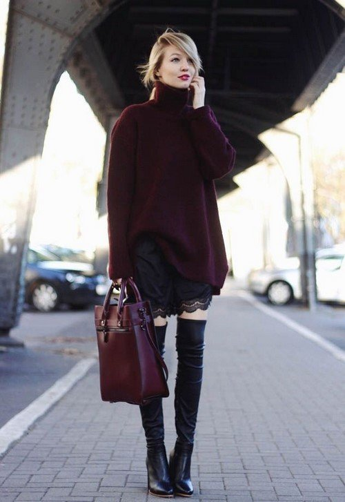
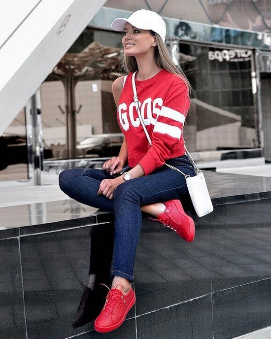
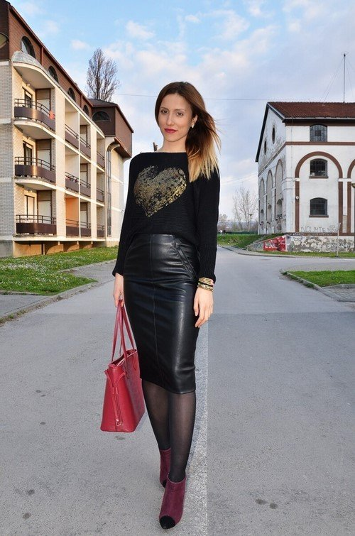
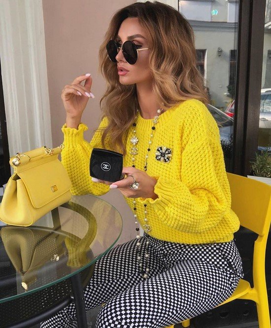
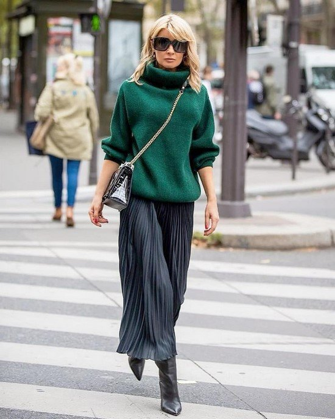
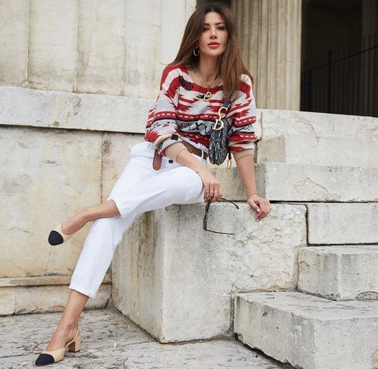
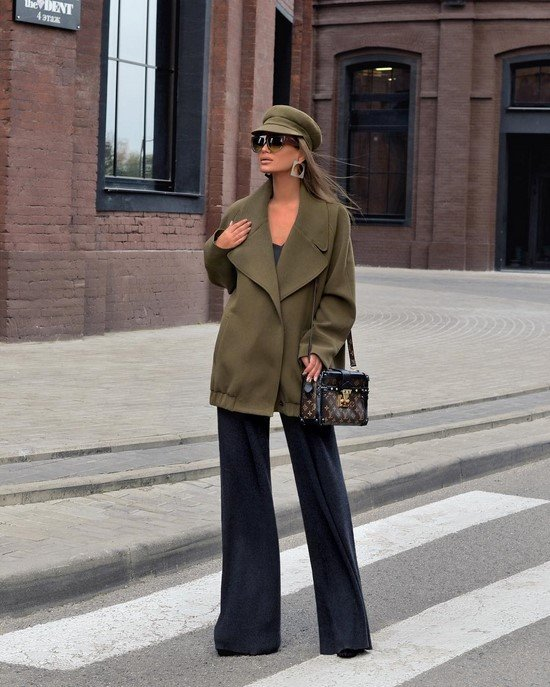
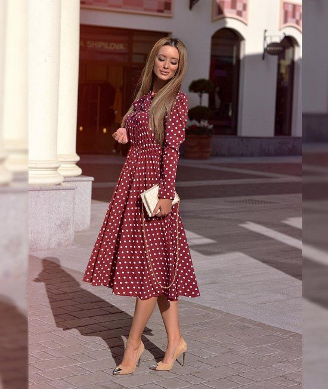

О новинках и инновациях в моде можно говорить часами, анализируя, объясняя, демонстрируя модные тренды осень-зима и весна-лето в одежде оригинальными фото примерами.
Мы не будем утруждать вас длительными обзорами, и вкратце представим для вас модные тренды в одежде 2022-2023, проиллюстрированные удачными фото идеями.
Модные тренды одежды 2022-2023 будут сочетать, как комфорт и практичность, так и эффектную подачу вещей в определенном стиле, позволяющую презентовать ваш лук в самом выигрышном свете.
Модные тренды в одежде — фото, идеи, актуальные фасоны
Модные тренды в одежде 2022-2023 которые мы сегодня постараемся презентовать вашему вниманию, будут для многих чем-то новым и необычным, а для кого-то явлением понятным, не выходящим за рамки допустимого. Каждый год мода меняется, но неизменным остается индивидуальное восприятие стиля тем или иным человеком, что позволяет формировать неповторимые образы с учетом последних тенденций и новинок одежды, но с индивидуальным подходом к деталям. Дизайнеры предложили нам модные тренды одежды 2022-2023 сезона весна-лето и осень-зима, которые нередко поражают своей экстравагантностью. Так и хочется сказать, куда же это носить, и с какими вещами сочетать, ведь не всегда мы понимаем модные тренды так, как пытались их показать создатели моды.
Реклама

Мы решили предложить вам свой взгляд на самые стильные тенденции и модные тренды в одежде 2022-2023, которые будут влиять на моду, в частности на новинки и фасоны одежды, цветовую палитру, особенности кроя и выбора ткани и т.д. Если вы хотите одеваться модно и стильно, вам, несомненно, стоит знать, какие модные тренды в одежде 2022-2023 будут на пике актуальности уже скоро.


Бесспорно, универсальной и практичной является джинсовая одежда во всевозможных фасонах, представляющая модные тренды в одежде 2022-2023 в виде комбинезонов из денима, модных широких джинсов, юбок и платьев миди длины, стильных свободных джинсовых курток.
Модные тренды 2022-2023 порадуют не только джинсовыми вещами в классическом синем, но и разнообразят стиль модниц другими оттенками, в частности белым, серым, бордовым, зеленым, красным, желтым тонами, гармонично сочетающимися как с осенне-зимними, так и весенне-летними луками.
Даже если вы полностью переоблачитесь в деним, ваш образ будет весьма удачным и гармоничным, учитывая последние модные тренды 2022-2023

Эффектно, эпатажно, стильно будет выглядеть кожаная одежда, которая стала трендовой в сезоне осень-зима.
Хорошо удерживающая тепло, модная одежда из матовой, лаковой и вывернутой кожи представлена такими фасонами, как юбки простого и асимметричного кроя, куртки-косухи и кожаные пиджаки, брюки широкого и приталенного пошива.
Нельзя не назвать и такие модные женские тренды 2022-2023, как кожаные плащи и тренчкоты, прекрасно подходящие для осенней и весенней поры. Вещи из кожи можно носить и с другими фактурами, к примеру, бархатом, трикотажем, твидом и т.д.

Как известно, цвет играет немало важную роль в моделировании неповторимого индивидуального образа для каждой женщины.
Наиболее ярко выражают вашу внутреннюю сущность те цвета, которые вам импонируют, и которые хочется использовать, как в одежде, так и в макияже и маникюре. Модные тренды 2022-2023 осень-зима и весна лето благоволят к красному, синему, серому, фиолетовому цвету. Для теплых деньков подойдут голубые, бежевые, розовые, оранжевые, желтые тона, формирующие яркий и прелестный гардероб с изюминкой.
Важно, что летом можно носить, как монохромные модные тренды предпочтительного оттенка, так и создавать яркие цветочные взрывы, миксируя на грани контрастов и лаконичной утонченности. Отметим, что яркие цвета появились не только в модных коллекциях весна-лето. Для холодной поры дизайнеры предложили желтые, красные, голубые, лиловые, коралловые пуховики, пальто и шубы, поднимающие настроение даже в самый пасмурный день.

Гардероб современных женщин все больше наполняется вещами комфортными и практичными, которые можно одеть в офис, университет, накинуть спеша на встречу, прогулку или в магазин.
Что может быть практичнее и комфортнее, чем модные тренды вязаной одежды, которые для сезона осень-зима 2022-2023 — самое то. Примечательно, что вязаные вещи крупной вязки женщины стали носить не только в тандеме с джинсами, но и комбинировать вязаные свитера, кофты, пуловеры, свитшоты и джемперы с широкими или зауженными брюками, кожаными и тканевыми юбками, и даже шортами.
Актуальны такие модные тренды вязаной одежды 2022-2023, как платья и туники. Благодаря вариациям длины, необычной форме рукавов, асимметричности и многослойности дизайнеры предложили эксклюзивные и неординарные решения вязаных платьев и туник, как для стильных леди, таки для женщин с изюминкой — эпатажных и ярких.

Каждый год в журналах и на сайтах о моде можно прочитать, что модные тренды в одежде предусматривают вышивку, декоративные элементы и интересные орнаменты и т.д.
Да, по сути мода циклична, и ничего удивительного в этом нет. Тем не менее, каждый год появляются весьма оригинальные и необычные фасоны одежды с нежной либо броской вышивкой, флористическими, животными и геометрическими принтами, отделкой в виде бахромы, кружева, минималистических узоров и т.д.
Наиболее ярко модные тренды одежды в виде декора можно просмотреть в фасонах вечерних и коктейльных платьев и других вечерних комплектов, к примеру, комбинезонов

На показах высокой моды создатели лучших коллекций вернули популярность одежде в ковбойском стиле, сафари, милитари, а также стиле пэчворк, которые позволят создавать яркие, игривые и смелые образы на каждый день для тех, кому классика и традиционная одежда чужды.
Отметим, что модные тренды 2022-2023, представляющие эти стили, будут удивлять разноплановостью. Среди фаворитов большие ковбойские шляпы, удобные и красивые штаны в стиле сафари, неповторимые и броские платья пэчворк, костюмы и пальто с элементами военной формы и т.д.
Дополнить модный образ можно правильно подобранными аксессуарами в виде шарфов-платков, обуви на низком ходу, сумочками из кожи и замши и т.п. Стилисты рекомендуют также вносить модные тренды в уже излюбленные вами стили, добавляя яркую изюминку в каждый образ.

Как мы уже говорили, к трендам 2022-2023 можно отнести деним и вязку разной фактуры. Но на этом модные тренды 2022-2023 не заканчиваются.
Среди комплектов осень-зима в гардеробе каждой модницы должны появиться вещи из трикотажа, шерсти, бархата, замши, велюра и других добротных тканей.
А в качестве декора дизайнеры предлагают всегда актуальные меховые вставки и элементы, которые делают любой образ роскошным.
Примечательно, что сейчас искусственный мех выглядит очень даже красиво, позволяя покупать меховые изделия женщинам разных категорий.
Мы назвали основные модные тренды одежды 2022-2023. А сейчас лучшие фото идеи стильных луков, где показаны также модные тренды 2022-2023.